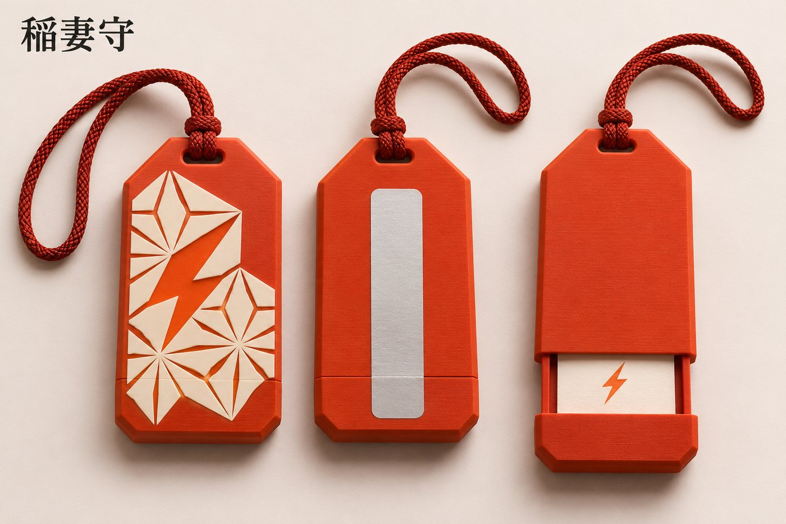

鍵を受け取りません
販売者もサイトも、秘密鍵や12語を受け取りません。サイトに入力するのは、公開の受取アドレスだけです。
かざして確かめる、ビットコインの御守り
封じているあいだは、雷雲。動かすと、稲妻になる。
鍵をつくるのも、封をするのも、あなた自身。かざすたびに、入れたブロックから描かれた、その御守りだけの紋が現れます。
雷雲
この御守りには、雷が封じられています
10,000 sats
ふたつの姿
保管しているあいだは、円い銀の「雷雲」。丸い渦が二十四、一本の線でつながり、中心に三つ巴。中のsatsを動かすと、同じ二十四の渦が角ばった雷文に変わり、六角の朱金の「稲妻」になります。
紋は見本です（実在のブロック #840,000・#905,900 から描画）。切り替えは見た目だけで、お金は動きません。
ブロックから描く
三つの約束
販売者もサイトも、秘密鍵や12語を受け取りません。サイトに入力するのは、公開の受取アドレスだけです。
スマホをかざすと、中の残高と、その御守りだけの紋が開きます。
タグのURLにアドレスがそのまま入っています。どのブロックエクスプローラーでも確かめられ、satsを動かすのにこのサイトは要りません。

キットの中身
価格・販売ページ
準備中です
届くのは残高ゼロのキットです。satsを入れるのも、封をするのも購入した方です。
届いてから
よくある質問
中身はオンチェーンのビットコインです。ライトニングのウォレットからでも、オンチェーン送金に対応していれば入れられます。
額は自由です。ただ、あとで移すときにオンチェーンの手数料がかかるため、少額だと手数料の割合が大きくなります。
多くの場合できます。自分で管理するウォレット宛ての送金になるため、取引所によっては、送付先の持ち主の情報（本人かどうか・氏名など）の入力や登録を求められます。
かざして見るのは、NFCを読めるスマホならiPhoneでもAndroidでもできます。NFCへの書き込みは、AndroidはこのサイトのChromeから、iPhoneは書き込み用のアプリで行います。
札の12語や秘密鍵がなければ、だれも中のsatsを動かせません。販売者やこのサイトが取り戻すこともできません。札は大切に保管してください。
タグに書いたURLの中にアドレスが入っているので、NFC読み取りアプリでURLを見れば、どのブロックエクスプローラーでも確かめられます。中のsatsを動かすのに、このサイトは要りません。
承認されると紋が「稲妻」に変わり、移動したブロックが記録として残ります。贈り主も鍵の控えを持てるため、受け取った方が自分だけで管理したいときは、開けて移すことをおすすめしています。